3D creation,
written in pure assembly.
BeeModel models, sculpts, paints, rigs, animates, simulates and path-traces — in one 1.5 MB static binary for Linux. No libc, no toolkit, no libraries: x86-64 assembly talking straight to the kernel and the Wayland compositor.
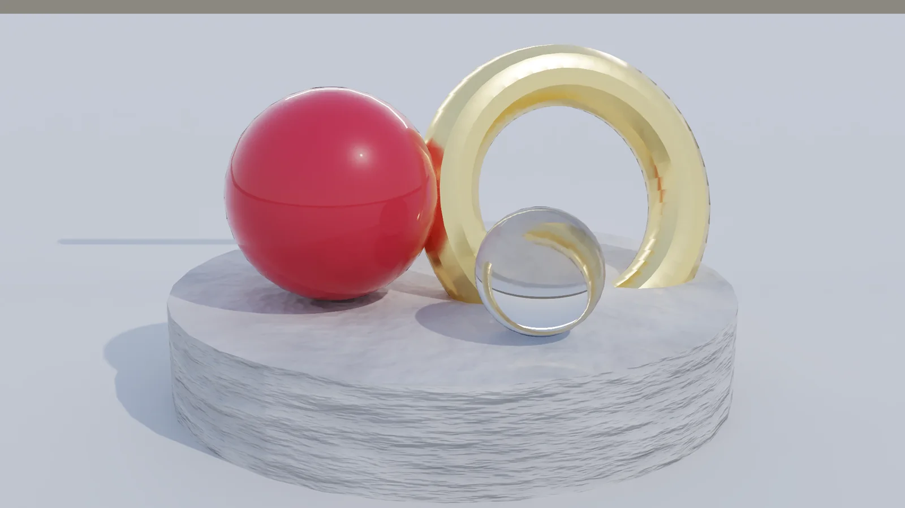
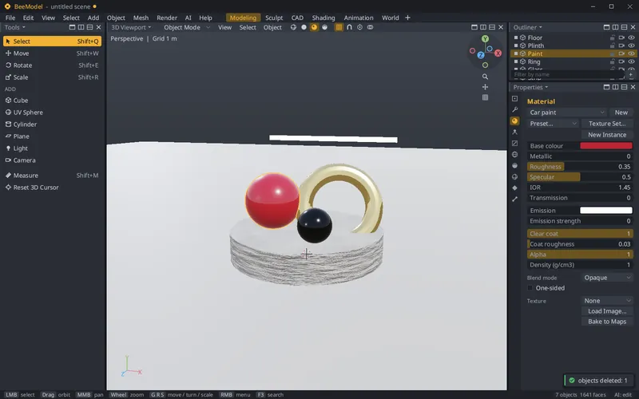
syscall ; no libc here
A complete 3D suite — not a toy
From the first cube to a rendered, simulated, animated scene: every tool lives in the same tiny program, works on every core, and is scriptable and reachable by AI agents.
Polygon modeling
Extrude, inset, bevel, loop cut, knife, bridge, spin, booleans — and a non-destructive modifier stack with Catmull–Clark subdivision, mirror, array, solidify, remesh and multires.
Sculpt & paint
Draw, clay strips, crease, grab, snake hook and more, with dynamic topology, multires and pen pressure. Texture, vertex and weight painting with layers, baking AO and normal maps.
Materials & path tracing
Principled materials with node graphs, HDRI lighting and Hive — a physically based path tracer with a denoiser on every core, and on the GPU through Vulkan, with hardware ray tracing on RTX cards. Animations render frame after frame while the next one is built, reusing samples between frames. The viewport draws on the GPU too, so animations play back in real time in Solid, Material Preview and Rendered.
Geometry nodes
Procedural trees for terrain, erosion, scattering, instancing, curves and L-systems. A million blades of grass, placed not realized.
Parametric CAD
Constraint-solved sketches, pads, pockets, revolves, holes, shells, fillets and patterns driven by parameters; an exact B-rep kernel, STEP export and dimensioned 2D drawings.
Animation & rigging
Keys on anything, a dope sheet and graph editor, actions and layers, armatures with IK and automatic weights, constraints, drivers, shape keys, onion skins and motion paths.
Physics
A parallel rigid-body solver for 10 000 bodies with joints, mesh and heightfield colliders; XPBD cloth and soft bodies; shatter into bricks, shards or balls; a simulation cache.
Attractors & force fields
Attractors, gravity zones, wind, vortices, turbulence and drag on bodies and cloth. Bodies that attract each other (Barnes–Hut), and planets you can walk around.
Particles & liquid
Millions of particles from faces, volumes or points, with collisions and chained events — rain, sparks, fireworks. Position-based fluids, solved on the GPU, with a smooth surface, foam and floating bodies.
Landscapes
Generate, erode, sculpt and paint heightfields with layers; presets from hills to islands with a sea that floats things; PNG/EXR heightmaps in and out.
Play mode & logic
Press F5 and walk through your scene while it simulates. Logic graphs give objects behaviour — events, actions, messages — no code required.
A billion triangles
Nanite-style virtualized geometry draws huge meshes through a cluster LOD cut every frame; world partition streams big worlds by cell.
AI assistant & MCP
A built-in AI assistant (Claude Code, Grok or OpenRouter) and an MCP server, so agents can see the scene, run any command and propose changes you accept or revert.
Versions & co-editing
Every saved scene keeps a content-addressed history with diffs and merges; live co-editing sessions and a live link to other tools.
BeeScript
A small scripting language for everything: build scenes, run any operator, drive the viewport, test — from the console, files or agents.
Files in, files out
Its own .bee format, plus OBJ, STL, glTF/GLB, STEP, 3MF, DXF, SVG, PDF drawings and Blender .blend import and export.
Fast & frugal
Event driven: 0% CPU when idle, a few MB of memory, a multithreaded software rasterizer, SIMD everywhere — and it starts in a blink.
See it at work
Every picture on this page was made by BeeModel itself — the screenshots by its test harness, the renders by its path tracer.
Model the way you already know
Blender-style keys and areas: G, R, S with axis locks, snapping and typed values; Tab into edit mode for vertices, edges and faces. Material Preview shades it live with smooth normals.
- Booleans that stay exact, a full modifier stack
- Nine themes, any area any editor, workspaces
- Every command searchable with F3, undo for everything
Node-based materials
Principled BSDF materials, driven by Unreal-style node graphs: noise, ramps, bump, math, image textures — with live previews on every node and in the viewport.
- Presets from gold to car paint, glass and marble
- Material functions and instances
- Bake to texture maps
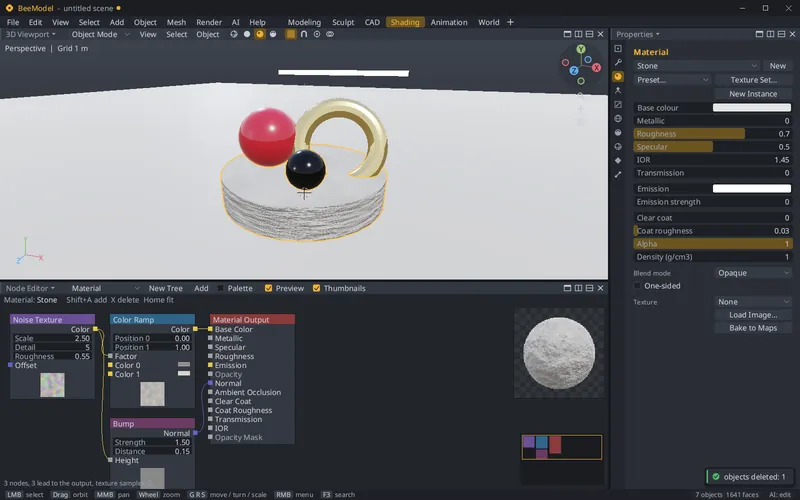
Sculpt, then paint
A stone head sculpted on a dense ball, its detail baked into the maps of a light, unwrapped mesh, then painted in layers — and rendered by the path tracer.
- Dynamic topology, multires, symmetry, stabilizer
- Texture, vertex and weight paint with layers
- Bake ambient occlusion, curvature and normal maps
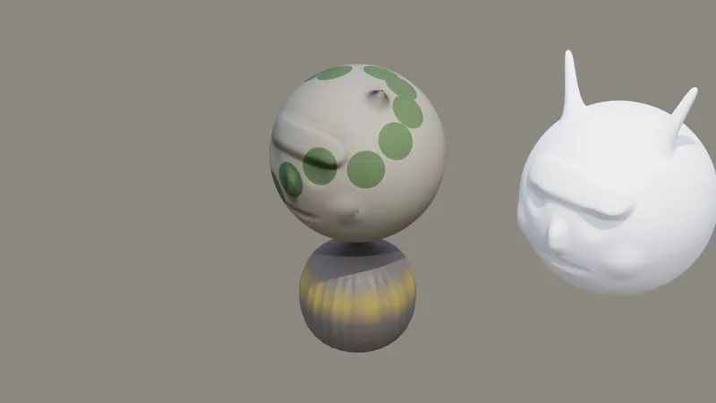
Design parts that fit
An electronics enclosure from dimensioned sketches and parameters: change one value and every feature rebuilds. Export STEP for CAD, 3MF for the slicer, a PDF drawing for the workshop.
- Constraint solver: coincident, tangent, equal, dimensions
- Pad, pocket, revolve, hole, shell, fillet, chamfer, pattern
- Exact B-rep kernel, mechanisms with joints
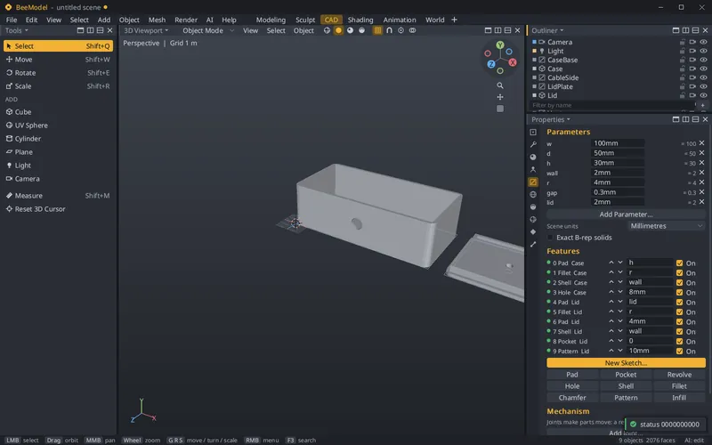
Bring it to life
A skinned character on an armature with IK legs walks; gears turn on a keyed crank; a thousand boxes heap up and a tablecloth drapes — all in one scene, baked and played back.
- Timeline, dope sheet, graph editor with Bézier handles
- Actions, layers, drivers and constraints
- Automatic weights, pose mode, onion skins
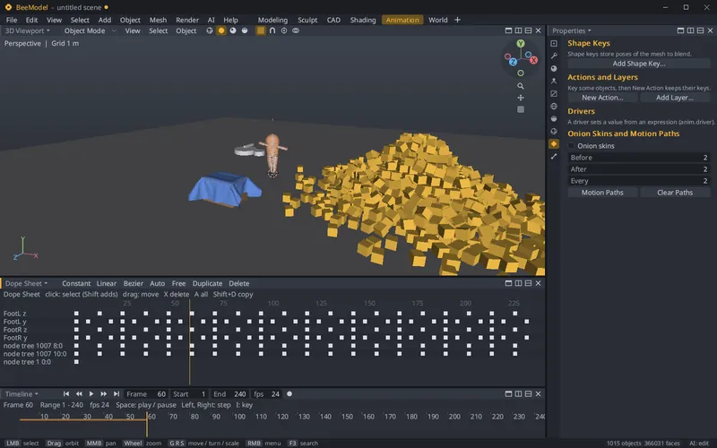
Break things — properly
A glued brick wall, cut with Shatter, takes a steel ball on a chain of joints: only the bricks it reaches come loose. Substepped, parallel and deterministic on any number of threads.
- Boxes, spheres, capsules, hulls, compounds, meshes
- Hinges, sliders, motors, limits, breakable joints
- Shatter on impact, during the simulation and in play
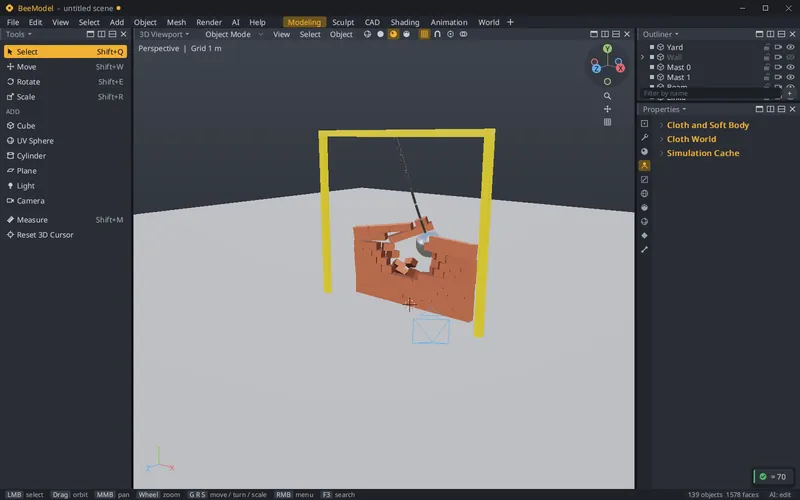
Place gravity anywhere
A tornado — a vortex with lift and inflow — and its streamlines from a probe ball. Attractors, gravity zones, wind, turbulence and drag act on rigid bodies, cloth and the player.
- Falloff, keyframed strength, collision groups
- N-body attraction with a Barnes–Hut tree
- Arrows and streamline overlays to see the pull
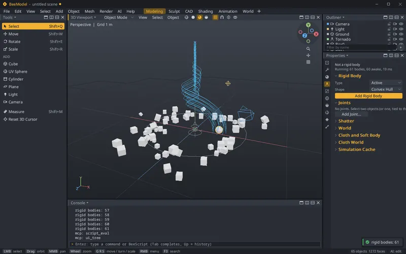
Pour it, burst it, blow it away
A dam break: 50 000 particles of water run down a tank, break round a pier and lift the crates dropped into them. The surface is meshed every frame; spray turns to foam.
- Emit from faces, volumes, vertices or a point; draw as points, sprites or objects
- Collisions with the ground, landscapes and bodies; hit, death and spray events
- Position-based fluids, a closed surface, a simulation cache you can bake
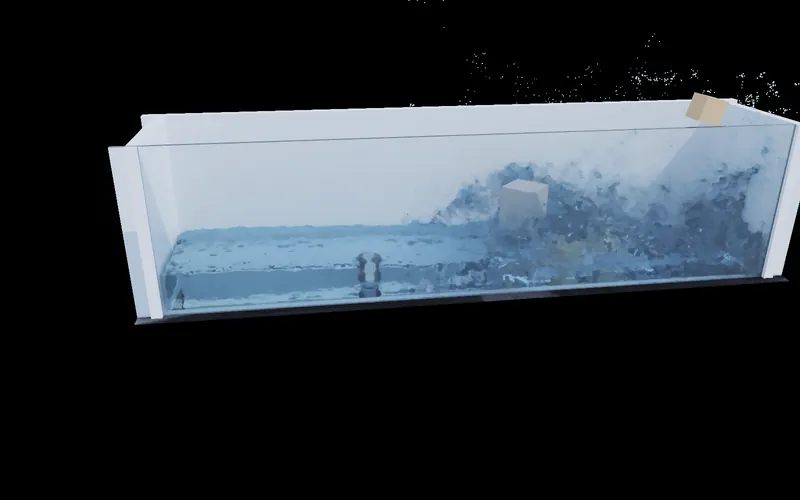
Worlds to land on
An island generated, eroded and painted by slope and height: sand at the shore, grass, rock and snow — with a sea that floats wood and sinks stone.
- Generate, erode, terrace, flatten — as layers
- Sculpt and paint landscapes with brushes
- A heightfield collider for bodies, cloth and the player
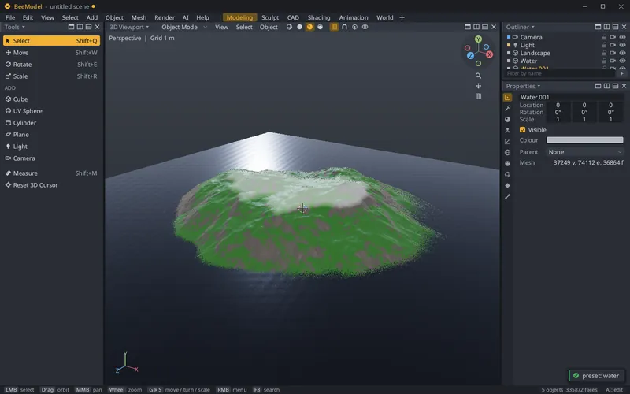
Procedural everything
One geometry-node tree makes a valley: ridged noise, 200 000 erosion droplets, rocks scattered by area, plants grown from an L-system, a rail swept along a curve.
- Distribute points, instance, realize, curves to mesh
- Terrain, erosion and wave-function-collapse generators
- Node groups and reusable assets
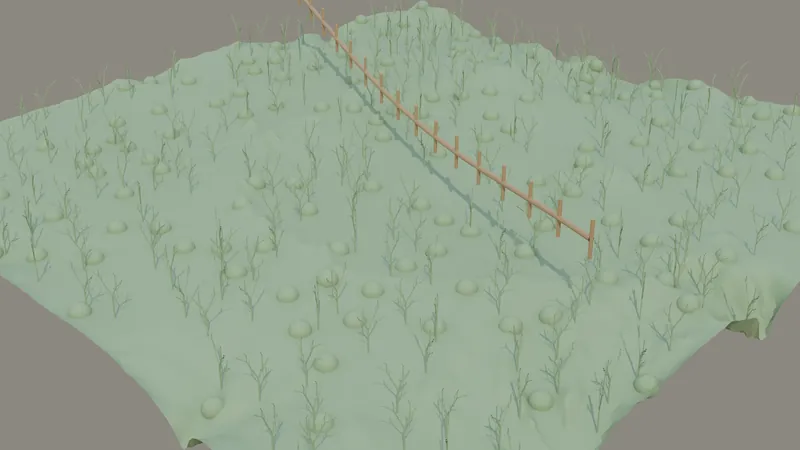
Demos
Each demo is one BeeScript file that builds the scene; the films are path-traced frame by frame by BeeModel's own renderer, the screencasts are its viewport.
Fireworks
Rockets whose deaths burst into shells of stars, and stars whose deaths drop glitter: particle events feeding particle systems, glowing through their vertex colour.
Dam break
50 000 liquid particles let go in a glass tank: a meshed surface, foam from the spray, and pine crates that float on the wave.
Leaf twister
A wandering vortex lifts 18 000 leaves — particles drawn as objects — up its funnel and drops them behind it.
Rainstorm
40 000 drops a second on a landscape and a cabin roof. Every hit throws up three splashes while a keyed wind slants the rain.
Wrecking ball
A glued brick wall cut by Shatter, hit by a steel ball on a chain of point joints. Only the bricks it reaches break loose.
Rockfall island
Boulders roll down an eroded island on its heightfield collider, topple a glued tower, and sink in the sea while crates float.
Gallery smash
A glass vase, a marble sphere and a sandstone cube stay whole until a ball lands — then shatter on impact.
Tornado
A vortex field with lift and inflow throws 80 rigid boxes around — live in the viewport.
Orbits
Moons circling a planet that attracts them by its mass: N-body gravity, leapfrog-integrated, energy kept.
Rendered in BeeModel
Physically based materials — clear coat, metals, glass, emission — under a studio sky, denoised. On the CPU across every core, or on a Vulkan GPU with RTX ray tracing: a frame of the rainstorm demo — a landscape, a cabin and 94 000 raindrops — in about a tenth of a second.
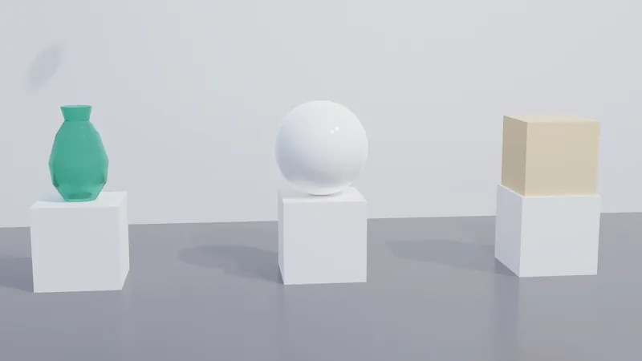
Get BeeModel 0.24.0
One static binary. No installer, no dependencies, nothing to configure — download it, make it executable, run it.
Released 21 October 2026 · release notes · all releases
# download, make executable, run $ curl -LO https://github.com/bartbeecoders/beemodel/releases/download/v0.24.0/beemodel-0.24.0-linux-x86_64.bin $ chmod +x beemodel-0.24.0-linux-x86_64.bin $ ./beemodel-0.24.0-linux-x86_64.bin
scripts/build.sh — binutils onlyFree to download. Free to use. Free to change.
BeeModel is released under the MIT license: use it at home, at work or in your products, read and change the source, share it — commercially or not, with no fees and no strings beyond keeping the copyright notice.